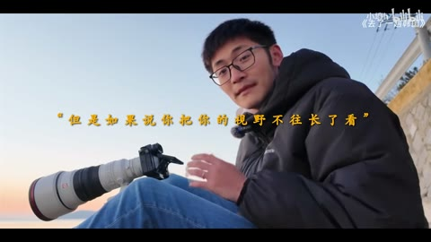
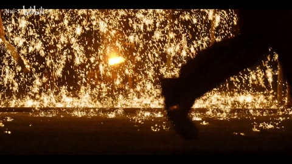
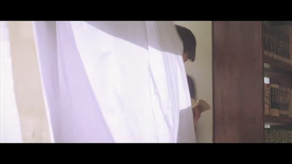

← 案例图谱H22 / 主要视觉研究样本
影视飓风那些无法超越的片段
小壕h · 186.6万播放快照 · ≥10万 · B站原作 ↗
长停留访谈、暖色空镜、幕后与成片、快速高反差镜头形成疏密差异；同题材镜头延续语义。

约32.000秒 · 案例代表帧从画面里找依据
这一例先看什么
长停留访谈、暖色空镜、幕后与成片、快速高反差镜头形成疏密差异；同题材镜头延续语义。
审美判断
访谈下方白描边字幕和居中金色强调句区分明确；少数字幕横跨复杂实景，仍以实际主句可读性评价，右上片源标签为辅助。
迁移到自己的题材
纪念混剪、品牌回顾、旅行、纪录短片、情绪随笔、多来源素材的主题表达。
教学提问：两个镜头为什么必须相邻？是共享意象、动作阶段、色彩，还是只是都很好看？
带画面的分析单元
图像标出取样时间，对应观察中的关键状态。单帧不能独立证明运动，连续性请结合摘录。表达作用与应用场景是教学解读，复现路线是建议，不是原作者工程还原。
分析单元 01 / 0—32秒
访谈长镜头／底部描边字幕／中心金色强调字
实际观察
日落边坐姿人物保持较长构图，中段穿插工作场景，32秒中心金色短句与底部白字形成层级。
表达作用（教学解读）
通过变化与稳定的比例让信息有轻重。视觉密度来自切镜、版式与局部动画三个层面，不只靠刀数。
具体应用场景
所有形式；尤其高潮前的蓄力、解释段的阅读、回忆段的停留和快慢对照。
复现建议（非原作者工程还原）
字幕按句显隐、描边阴影，中心强调句另设字号、颜色与字距；必要时压暗背景。
直出判断：容易，语句选择和停留时长需编辑判断
常见误用：全片等密度；把闪帧当新镜；高切速被当成质量分；没有稳定段供观众理解。
分析单元 02 / 36—56秒
暖色空镜串联／黑场留句／人物剪影
实际观察
飞机、石滩、渔船、日落剪影连续出现，56秒黑底只保留字幕。
表达作用（教学解读）
通过变化与稳定的比例让信息有轻重。视觉密度来自切镜、版式与局部动画三个层面，不只靠刀数。
具体应用场景
所有形式；尤其高潮前的蓄力、解释段的阅读、回忆段的停留和快慢对照。
复现建议（非原作者工程还原）
按色彩与叙事选择原素材，硬切与短淡出，保留字幕跨镜头延续。
直出判断：剪辑和黑场字卡容易；夕阳摄影质量依赖原片
常见误用：全片等密度；把闪帧当新镜；高切速被当成质量分；没有稳定段供观众理解。
分析单元 03 / 64—140秒
主题蒙太奇／地球插图／拍摄工作与旅途交替
实际观察
地球画面、人物近景、船上背影、工作镜头、高空气球设备依次出现；字幕和右上来源文字辅助叙事。
表达作用（教学解读）
利用相邻镜头改变理解，使原来无关的画面形成主题、对比或关系。
具体应用场景
纪念、广告、人物关系重组、旅行随笔、社会观点、品牌回顾。
复现建议（非原作者工程还原）
按文本主题建立素材索引、镜头表；来源标注单独排版，图像插入与裁切。
直出判断：技术容易；跨大量原片找镜头与语义组织有工作量
常见误用：素材只因好看而排列；上下文失真；借剪接制造未经支持的事实判断。
分析单元 04 / 144.9—146.9秒
光形态衔接／火花剪影／稳定手机前景与移动背景
实际观察
发光书页切橙色火花，再切近景火花剪影；146.033秒进入稳定手机前景和快速拖影背景，146.833秒转模糊字卡。手机段源片自身含拍摄/后期效果。
表达作用（教学解读）
将平面关系变成有前后层次的观看空间；小幅运动可以放大情绪。
具体应用场景
静止画MAD、回忆、图像故事、海报动态化、人物介绍。
复现建议（非原作者工程还原）
混剪层面按亮度和主题选材；近似手机效果可用手机蒙版固定前景、背景运动模糊。真实源效果归原作者。
直出判断：基础合成可做，精确复刻源片拍摄并不轻松
常见误用：所有层同速或反向乱动；人物像纸板；补洞不完整；视角变化超出原画信息。
分析单元 05 / 149.8—151.8秒
景别与色彩接续／山峰到水下硬切
实际观察
暖色山尖转冷色雪峰，再转蓝色鲸鲨、水下人物，最后火光。景别与运动在各素材内延续。
表达作用（教学解读）
让一次画面替换有理由：继续动作、转换观点、给反应，或通过相似形状建立联系。
具体应用场景
动作、对话、运动、情绪混剪、多来源的视觉联系。
复现建议（非原作者工程还原）
先选构图和主题适配的镜头，再以硬切和调色维持连贯；水下光线和火花来自片源。
直出判断：基础剪辑容易；不能把水下摄影当成可直接生成的后期效果
常见误用：只匹配颜色不顾动作阶段；方向突变；每次连接都加过渡掩盖问题。
分析单元 06 / 192—208秒
虚化背景音乐署名／金色引用字／交叉叠化片尾
实际观察
深色虚化背景上文字列音乐来源，之后人物与设备画面交叉叠加，结尾黑底小号英文署名。
表达作用（教学解读）
决定什么值得看、什么退到感受层；清晰与模糊、占满与留空之间的关系塑造语气。
具体应用场景
回忆、亲密、孤独、人物介绍、信息减负、画面间的呼吸。
复现建议（非原作者工程还原）
高斯模糊、背景压暗、文字居中、透明度交叉渐变，片尾淡出。
直出判断：容易
常见误用：模糊所有层；细字落在高亮区域；浅色误认为高级；没有清楚的主焦点。
用连续画面核对
保留原研究的多段局部摘录。片段含音轨不代表已听审；本资料不评价音乐卡点或对白节奏。
短时变化怎样理解
149.8–151.8秒至少4次主要替换，不能把这一密集窗外推为全片平均；手机前景稳定/背景拖影与火花主要是片源内容。
把镜头连接、版式更新、局部图层变化和镜内运动分开记录。所查窗口是下限，不是全片平均或AI／人工排名。
原始逐窗记录 →这次练习的约束
用六个不同来源的画面分别按“同动作、同颜色、同主题”排三版，写下每版新增的含义，而不只说顺滑。
先写“我希望观众明白／感到什么”，再选本页的一种手法。完成无效果基础版后再加层；解释新增层带来的收益和代价。
打开练习与复盘表 →来源、观看范围与制作归属
实际检查范围：53张4秒间隔概览及144.9–146.9、149.8–151.8秒15fps源帧已检查。210.048秒1080p60源。未连续完整观看与听审。
制作线索：小壕h；第一方页186.6万播放，明确素材来自影视飓风、亿点点不一样，并列音乐来源。研究对象为混剪，不能把片源拍摄和特效全归混剪作者。
边界：源素材来自影视飓风/亿点点不一样，混剪UP负责的选材排序字幕不等于独立完成原摄影、地球或手机效果；与H48同UP及同片源，统计比较需聚类。
播放快照保存时间（UTC）：2026-10-20T07:11:53.901150+00:00。H30制作方式为推定；同源改编、仿作和转载依原记录标注。
原始案例记录 · 选样表把你的判断留下来
笔记仅尝试保存在本机浏览器；浏览器策略可能限制本地文件存储，重要内容请导出。
沿着同一问题继续阅读

H49意象、色彩与纪实
品牌片头和优秀摄影来自原团队；粉丝混剪的增量在取舍与组织。与H50并读能练习识别同源素材。
机制／局限参考6个分析单元

H25意象、色彩与纪实
连接的力量来自相遇、凝视和接吻等共同意象。摄影原本已经优秀，剪辑者的表达在于选择、顺序和停留。
主要样本6个分析单元
 AI48
AI48细节、反应与转折
武侠幻想与真实宠物的反差，依赖落点和回收。水墨、打斗和日常拖鞋的材质变化，应服务反转而不是各自炫技。
主要样本7个分析单元